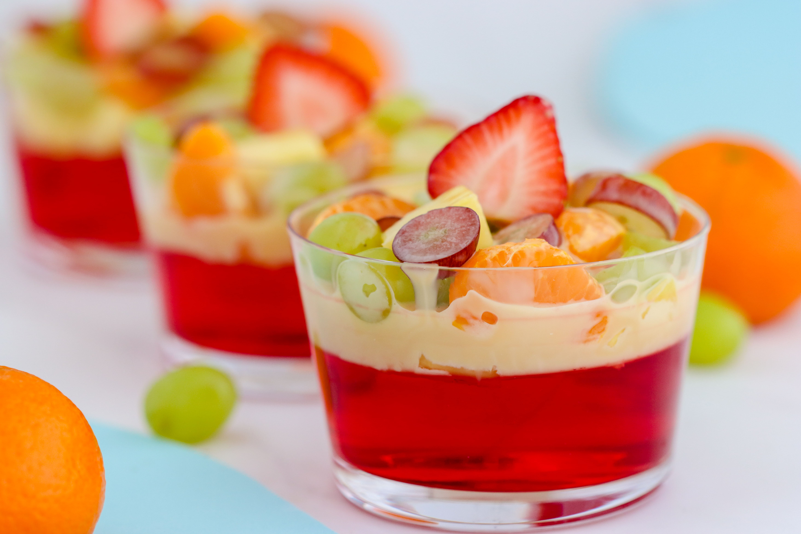
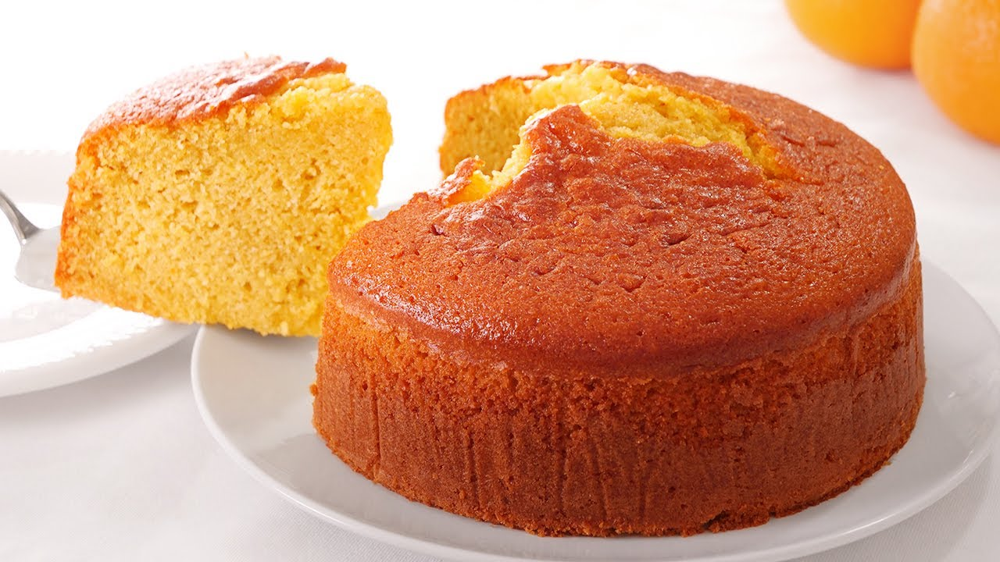

Postres
¿Te gustaría sugerir un nuevo postre?
Brownies
Brownies esponjosos con un sabor intenso a chocolate. ¡Irresistibles!
Ingredientes:
- 200g de chocolate oscuro
- 200g de mantequilla
- 200g de azúcar
- 3 huevos
- 100g de harina
Instrucciones:
- Precalienta el horno a 180°C.
- Derrite el chocolate junto con la mantequilla en baño María o en microondas, mezclando cada 30 segundos.
- En un bol aparte, bate los huevos con el azúcar hasta obtener una mezcla cremosa.
- Añade el chocolate derretido y mezcla bien.
- Agrega la harina tamizada y mezcla con una espátula hasta que se integren todos los ingredientes.
- Vierte la mezcla en un molde previamente engrasado.
- Hornea durante 25-30 minutos o hasta que al insertar un palillo salga limpio.
- Deja enfriar antes de cortar en cuadrados.
Flan de Caramelo

Un flan suave con un delicioso caramelo que se derrite en la boca.
Ingredientes:
- 500ml de leche
- 4 huevos
- 200g de azúcar
Instrucciones:
- Precalienta el horno a 180°C.
- En una cacerola, calienta 100g de azúcar a fuego medio hasta que se derrita y forme un caramelo dorado.
- Vierte el caramelo en un molde para flan, cubriendo la base de manera uniforme.
- En un bol, bate los huevos y añade el resto del azúcar. Mezcla bien.
- Agrega la leche y sigue mezclando hasta que quede homogéneo.
- Vierte la mezcla sobre el caramelo en el molde.
- Cocina el flan al baño María durante aproximadamente 45-50 minutos.
- Deja enfriar a temperatura ambiente y luego refrigera por al menos 4 horas antes de desmoldar.
Arroz con Leche
Un clásico postre de arroz con leche cremoso y dulce.
Ingredientes:
- 1 litro de leche
- 200g de arroz
- 100g de azúcar
- Canela en rama
Instrucciones:
- Enjuaga el arroz con agua fría para eliminar el almidón.
- Coloca la leche en una cacerola junto con la rama de canela y calienta a fuego medio.
- Cuando la leche comience a hervir, añade el arroz y reduce el fuego a bajo.
- Cocina el arroz a fuego lento, removiendo constantemente, durante unos 30-40 minutos hasta que el arroz esté tierno.
- Agrega el azúcar y mezcla bien. Cocina por 10 minutos más.
- Retira del fuego y deja enfriar. Puedes servir frío o caliente, espolvoreado con canela en polvo.
Gelatina de Frutas

Una gelatina fresca y colorida hecha con frutas naturales.
Ingredientes:
- 500ml de gelatina (cualquier sabor)
- Frutas variadas al gusto (fresas, manzanas, uvas, etc.)
Instrucciones:
- Prepara la gelatina siguiendo las instrucciones del paquete.
- Deja enfriar un poco la gelatina, pero sin que cuaje completamente.
- Corta las frutas en trozos pequeños y agrégalas a la gelatina.
- Vierte la mezcla en moldes individuales o en un recipiente grande.
- Refrigera durante al menos 4 horas o hasta que la gelatina esté completamente cuajada.
- Sirve frío y disfruta de la mezcla de sabores y texturas.
Panqueques

Panqueques suaves y esponjosos, perfectos para un desayuno o postre.
Ingredientes:
- 200g de harina
- 2 huevos
- 300ml de leche
- 50g de mantequilla derretida
Instrucciones:
- En un bol, mezcla la harina con los huevos y bate bien.
- Añade la leche poco a poco, batiendo constantemente para evitar grumos.
- Incorpora la mantequilla derretida y mezcla hasta obtener una masa homogénea.
- Calienta una sartén antiadherente a fuego medio y engrásala ligeramente con mantequilla o aceite.
- Vierte una pequeña cantidad de la masa en la sartén, formando círculos.
- Cocina los panqueques durante unos 2 minutos por cada lado o hasta que estén dorados.
- Sirve con miel, frutas o sirope al gusto.
Churros
Churros crujientes por fuera y suaves por dentro, espolvoreados con azúcar y canela.
Ingredientes:
- 250g de harina
- 250ml de agua
- 1 pizca de sal
- Azúcar y canela para espolvorear
Instrucciones:
- En una cacerola, hierve el agua con una pizca de sal.
- Cuando el agua esté hirviendo, añade la harina de golpe y mezcla vigorosamente hasta que se forme una masa homogénea.
- Deja enfriar la masa un poco y colócala en una manga pastelera con una boquilla en forma de estrella.
- Calienta aceite en una sartén profunda.
- Forma los churros con la manga pastelera directamente en el aceite caliente.
- Fríe los churros hasta que estén dorados y crujientes, aproximadamente 2-3 minutos por cada lado.
- Escúrrelos en papel absorbente y espolvorea con azúcar y canela.
Turrón
Turrón dulce y crujiente, perfecto para celebraciones y ocasiones especiales.
Ingredientes:
- 200g de azúcar
- 200g de almendras
- 1 clara de huevo
Instrucciones:
- Tuesta ligeramente las almendras en una sartén sin aceite.
- En una cacerola, derrite el azúcar a fuego medio hasta formar un caramelo dorado.
- Añade las almendras al caramelo y mezcla bien para cubrirlas por completo.
- Retira del fuego y añade la clara de huevo batida, mezclando rápidamente.
- Vierte la mezcla en un molde forrado con papel de hornear.
- Deja enfriar hasta que el turrón esté duro.
- Corta en porciones y sirve.
Bizcocho de Yogur
Bizcocho suave y esponjoso, hecho con yogur para un toque extra de humedad.
Ingredientes:
- 1 yogur natural (125g)
- 200g de harina
- 150g de azúcar
- 3 huevos
- 1 sobre de levadura
Instrucciones:
- Precalienta el horno a 180°C.
- En un bol, bate los huevos con el azúcar hasta obtener una mezcla cremosa.
- Añade el yogur y mezcla bien.
- Incorpora la harina tamizada junto con la levadura y mezcla hasta que no queden grumos.
- Vierte la masa en un molde previamente engrasado.
- Hornea durante 35 minutos o hasta que al insertar un palillo en el centro, salga limpio.
- Deja enfriar antes de desmoldar y servir.
Pasteles
Pastel de Vainilla
Un pastel suave y esponjoso con sabor a vainilla.
Ingredientes:
- 200g de harina
- 150g de azúcar
- 3 huevos
- Esencia de vainilla
Instrucciones:
- Precalienta el horno a 180°C.
- En un bol, bate los huevos con el azúcar hasta obtener una mezcla esponjosa.
- Añade la esencia de vainilla y mezcla bien.
- Incorpora la harina tamizada y mezcla suavemente hasta que no queden grumos.
- Vierte la mezcla en un molde engrasado.
- Hornea por 35 minutos o hasta que un palillo salga limpio al insertarlo en el centro.
- Deja enfriar antes de desmoldar y servir.
Pastel de Chocolate

Un pastel de chocolate clásico, perfecto para cualquier ocasión.
Ingredientes:
- 200g de chocolate
- 200g de azúcar
- 4 huevos
- 200g de harina
Instrucciones:
- Precalienta el horno a 180°C.
- Derrite el chocolate y deja enfriar ligeramente.
- Bate los huevos con el azúcar hasta obtener una mezcla cremosa.
- Incorpora el chocolate derretido y mezcla bien.
- Añade la harina tamizada y mezcla hasta obtener una masa homogénea.
- Vierte la mezcla en un molde engrasado y hornea por 35 minutos.
- Deja enfriar antes de desmoldar y servir.
Pastel de Tres Leches

Un pastel húmedo con una mezcla de tres leches que lo hace irresistible.
Ingredientes:
- 200g de harina
- 4 huevos
- 200g de azúcar
- 1 lata de leche condensada
- 1 lata de leche evaporada
- 200ml de crema de leche
Instrucciones:
- Precalienta el horno a 180°C y engrasa un molde.
- Bate los huevos con el azúcar hasta que estén espumosos.
- Incorpora la harina tamizada y mezcla suavemente.
- Vierte la masa en el molde y hornea por 30 minutos.
- En un bol, mezcla la leche condensada, evaporada y la crema.
- Cuando el pastel esté listo, déjalo enfriar y haz pequeños agujeros en la superficie.
- Vierte la mezcla de leches sobre el pastel y refrigera por al menos 2 horas antes de servir.
Pastel de Zanahoria

Un pastel suave y húmedo con el sabor único de la zanahoria y un toque de canela.
Ingredientes:
- 200g de zanahoria rallada
- 200g de harina
- 150g de azúcar
- 3 huevos
- 1 cucharadita de canela en polvo
- 100ml de aceite vegetal
Instrucciones:
- Precalienta el horno a 180°C.
- Bate los huevos con el azúcar hasta obtener una mezcla cremosa.
- Añade el aceite y la zanahoria rallada, y mezcla bien.
- Incorpora la harina y la canela, y mezcla hasta que esté homogéneo.
- Vierte en un molde engrasado y hornea por 40 minutos.
- Deja enfriar antes de desmoldar y servir.
Pastel de Naranja

Un pastel refrescante con el sabor cítrico de la naranja.
Ingredientes:
- 200g de harina
- 150g de azúcar
- 3 huevos
- 100ml de jugo de naranja
- Ralladura de una naranja
Instrucciones:
- Precalienta el horno a 180°C.
- Bate los huevos con el azúcar hasta que se disuelvan bien.
- Añade el jugo y la ralladura de naranja y mezcla.
- Incorpora la harina y mezcla hasta obtener una masa uniforme.
- Vierte en un molde engrasado y hornea por 35 minutos.
- Deja enfriar antes de desmoldar y servir.
Pastel de Manzana

Pastel suave y esponjoso con trozos de manzana que le dan un sabor único.
Ingredientes:
- 200g de harina
- 150g de azúcar
- 3 huevos
- 2 manzanas
- 1 cucharadita de canela en polvo
Instrucciones:
- Precalienta el horno a 180°C.
- Bate los huevos con el azúcar hasta obtener una mezcla cremosa.
- Añade la canela y mezcla bien.
- Incorpora la harina y mezcla hasta que no queden grumos.
- Agrega las manzanas cortadas en cubitos y mezcla.
- Vierte en un molde engrasado y hornea por 40 minutos.
- Deja enfriar antes de desmoldar y servir.
Pastel de Fresas con Crema
Pastel delicioso con capas de fresas frescas y crema batida.
Ingredientes:
- 200g de harina
- 150g de azúcar
- 3 huevos
- 200ml de crema de leche
- 200g de fresas frescas
Instrucciones:
- Precalienta el horno a 180°C.
- Bate los huevos con el azúcar hasta obtener una mezcla cremosa.
- Incorpora la harina y mezcla hasta obtener una masa uniforme.
- Vierte en un molde engrasado y hornea por 35 minutos.
- Deja enfriar el pastel, córtalo en dos capas y cubre con crema batida y fresas.
- Coloca la otra capa de pastel encima y cubre con más crema y fresas.
Pastel de Plátano
Un pastel húmedo y dulce con el sabor natural del plátano.
Ingredientes:
- 200g de harina
- 150g de azúcar
- 3 huevos
- 3 plátanos maduros
- 100ml de aceite vegetal
Instrucciones:
- Precalienta el horno a 180°C.
- Tritura los plátanos y mézclalos con el azúcar y los huevos.
- Añade el aceite y mezcla bien.
- Incorpora la harina tamizada y mezcla hasta obtener una masa uniforme.
- Vierte la masa en un molde engrasado y hornea por 40 minutos.
- Deja enfriar antes de desmoldar y servir.